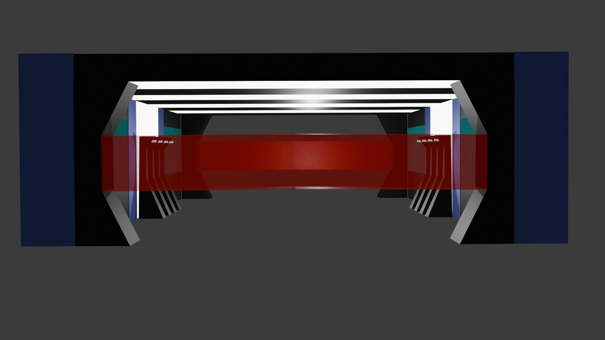
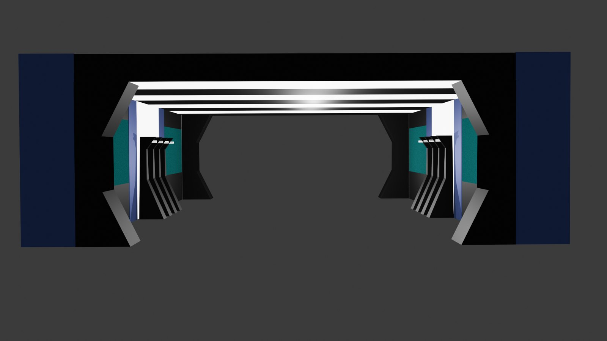
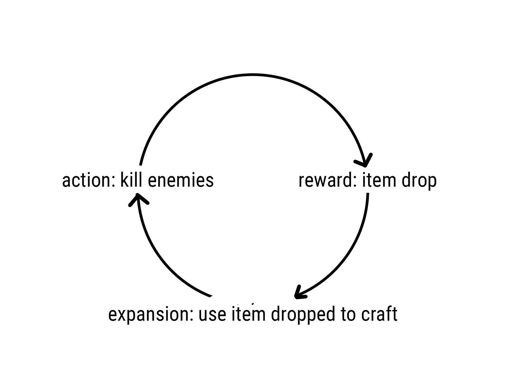

Game concept
Energize — game concept
My own FPS: fast, chaotic, low-poly — old-school Doom meets Cruelty Squad. Pitch deck, design document, enemy stats and the first level pieces.
About this work
Energize is a fast-paced action FPS with a minimal story and no scopes — everything is shot from the hip. The pitch is simple: kill, heal, craft and crack skulls, and feel immortal while doing it. The art is deliberately low-poly; sometimes a level will look stunning, sometimes you won't notice because there's too much killing to do.
The design document goes into numbers. The player has 300 base health, a punch that does 25 and a plasma crystal pistol that never reloads but overheats after 15 rapid shots: 25 body, 40 head, 15 limb, 50 critical. Three enemy types so far — small grunts (25 HP, hunt in packs, one punch kills and heals you), standard pistol troops (100 HP, overheat their guns a lot) and shield troops (200 HP behind a 75/125 shield that only breaks to punches or sustained fire, giving a 30-second window).
The core loop is kill → item drop → craft: shield crystals from melee kills become gauntlet charges, plasma crystals upgrade small weapons, volatile crystals make explosives. The story starts with a crash landing on an unknown planet and a radio message to find survivors; the first level is the wasteland and the power plant, and the second is inside a factory, including the corridor above where you override the lasers and dodge acid showers.
Images


